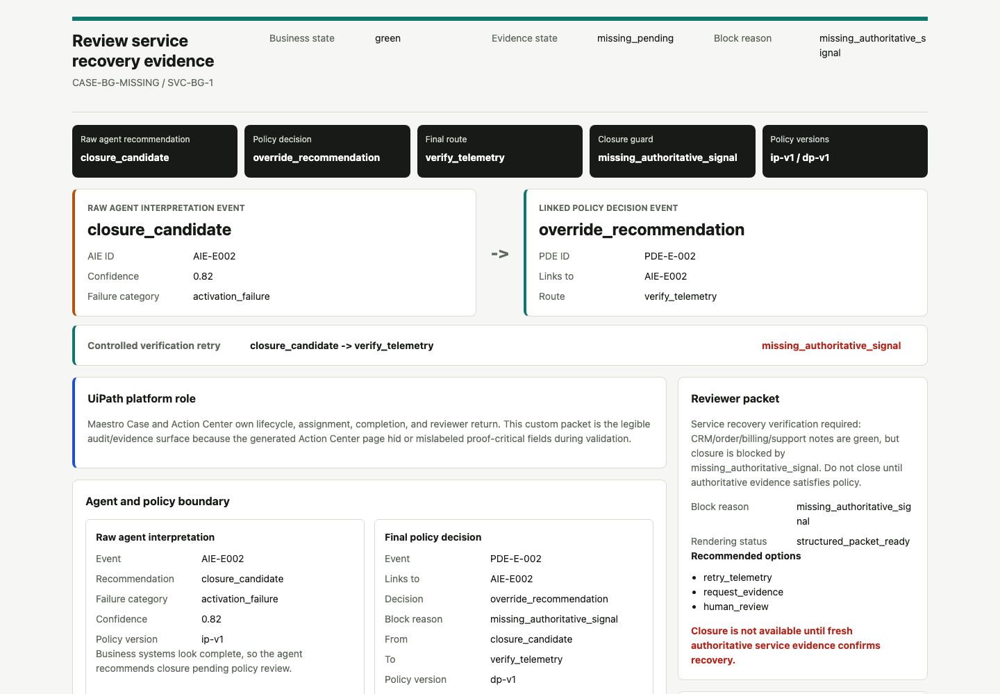
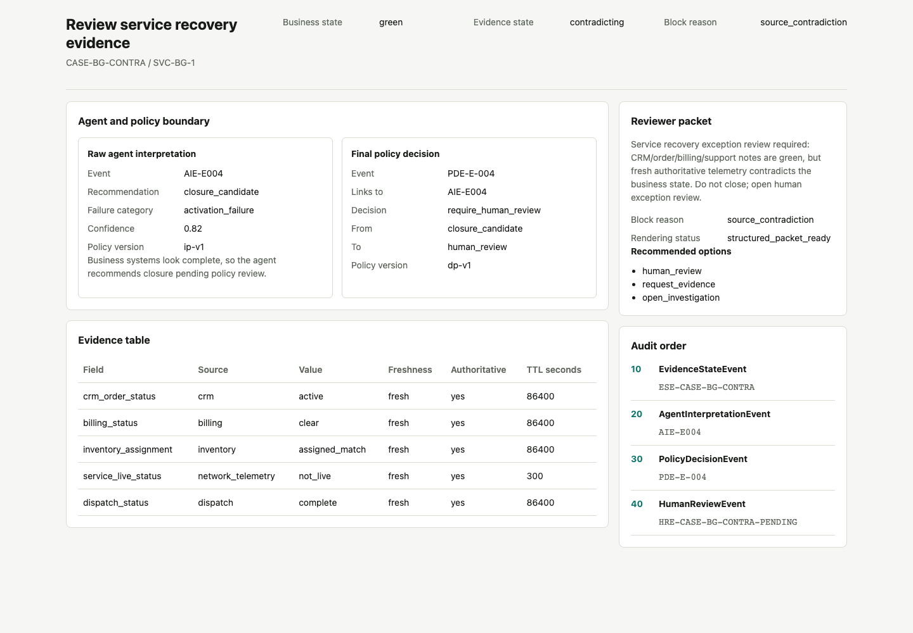
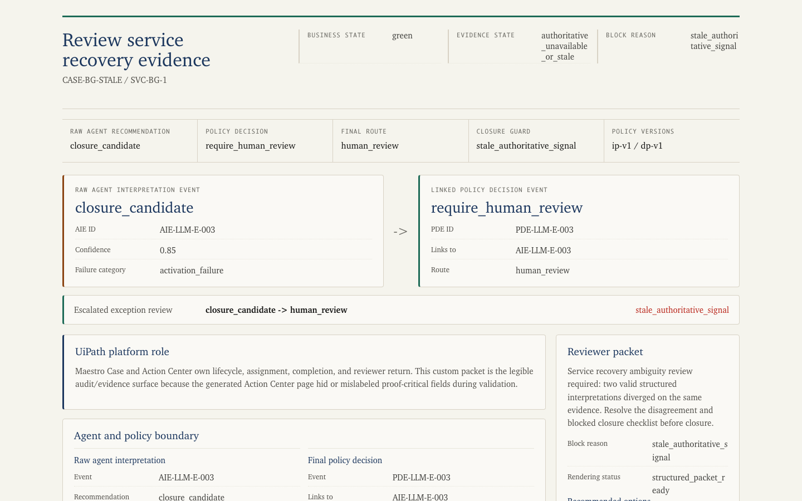

ClearPath Recovery
No service case closes until authoritative evidence proves the customer is actually restored
UiPath AgentHack 2026 · Maestro Case · Governed Telecom Recovery
01 · BUSINESS PROBLEM
The riskiest case is the one that looks resolved everywhere except the customer’s service.
CRM, orders, billing, and support notes can all look green while authoritative service evidence is missing, stale, or contradictory.
Wrongful closure
The customer still has no service, but the case is marked resolved.
Repeat contact
The next call reopens the same work with worse SLA pressure.
Audit gap
Reviewers cannot reconstruct why the case was closed.
The project is not a generic governance platform. It is a concrete telecom exception workflow.
02
02 · ARCHITECTURE THESIS
Agents interpret. Policy decides. Maestro routes. Humans own exceptions.
01
Evidence
CRM, billing, telemetry, inventory, dispatch, notes
02
Agent
Turns ambiguous text into structured signals
03
Policy
Blocks unsafe closure and chooses the allowed route
04
Maestro Case
Carries stages, tasks, incidents, and lifecycle
05
Human review
Owns high-impact contradictions and remediation
The LLM never closes cases, overrides policy, or mutates production rules.
03
03 · WHY MAESTRO CASE
This is Case work because the route emerges as evidence changes.
The workflow is not a fixed BPMN-style happy path. It is long-running exception handling with changing evidence, SLA pressure, human accountability, and audit requirements.
Unpredictable path
Missing telemetry, stale signals, contradiction, and human review are decided after evidence arrives.
Human-owned risk
High-impact contradictions become reviewer tasks with structured return, not silent automation.
Durable audit
The case must preserve raw agent recommendation, final policy route, reviewer action, and policy versions.
ClearPath Recovery fits Track 1: dynamic exception-heavy casework with agents, automation, and humans in charge at key decision points.
04
04 · UIPATH PLATFORM MAP
UiPath is the orchestration and governance boundary.
Maestro CaseDynamic exception-heavy case lifecycle, stage routing, incidents, recovery path.
Action CenterHuman task lifecycle, assignment, completion, reviewer action/comment.
Data Fabric / OrchestratorDurable audit bundle, package/process/version readback, full payload proof.
Test ManagerManual execution evidence for E-001 through E-009 eval coverage.
UiPath CLIRepeatable package, task, Data Fabric, Test Manager, and validation readback.
Custom evidence packets make the proof readable; they do not replace UiPath orchestration.
05
05 · SCENARIO 2A
Same green business systems. Missing signal means verify, not close.

The agent recommends closure. Policy preserves that recommendation, links it to the final decision, and routes the case to telemetry verification.
- Business state stays green.
- Closure is blocked by missing authoritative service evidence.
- The SLA clock stays alive until telemetry is fresh.
06
06 · SCENARIO 2B
Same green business systems. Contradiction means human review.

The business fixture is intentionally the same. Fresh authoritative telemetry says the service is not live, so the route escalates.
- Only the authoritative evidence condition changes.
- Policy rejects closure and opens human review.
- The reviewer sees the contradiction and closure guard.
07
07 · ONE VARIABLE, DIFFERENT ROUTE
Missing evidence and contradicting evidence are different operational problems.
Missing or stale
- Business systems are green
- Authoritative telemetry is absent or too old
- Allowed route: verify telemetry
- Operational posture: controlled retry
Contradicting
- Business systems are green
- Fresh authoritative telemetry says not live
- Allowed route: human review
- Operational posture: exception handling
This is the central proof: same business-green fixture, different authoritative signal, different route.
08
08 · AGENT USEFULNESS BOUNDARY
The LLM contributes structured interpretation, not final authority.

An adversarial interpretation run turns closure pressure and unresolved risk into structured disagreement for policy.
- Advocate and skeptic outputs validate against the same schema.
- Disagreement is policy input, not prose parsing.
- Policy still owns closure eligibility.
09
09 · EVAL AND LEARNING LOOP
The eval suite keeps the agent useful without weakening closure policy.
E-001Aligned closure accepted
E-002/E-003Missing or stale evidence blocks closure
E-004Source contradiction escalates
E-005/E-006Notes and pressure influence routing without overriding truth
E-007/E-009Invalid output and override persistence are tested
E-008Policy improvement remains pending human approval
Validated path: local tests plus Test Manager manual representation, not claimed automated Test Cloud execution.
10
10 · PRODUCT FEEDBACK AWARD
The strongest product ask is a Maestro Case Human-Review Readiness Check.
The pieces exist across Maestro, Actions, packages, Data Fabric, and Test Manager. Builders need one preflight and auditability contract that proves the human-review path will work before runtime.
Before runtime
Check services, roles, Actions, package/feed version, task bindings, and evidence fields.
During runtime
Expose reviewer field rendering, task lifecycle, and structured return status.
After runtime
Reconstruct agent event, policy decision, human action, versions, and audit payload in one view.
This is framed as actionable product feedback, not a complaint list.
11
11 · CODING AGENT CONTRIBUTION
Codex helped build and verify the submission pack.
BuiltPython core, schemas, policy engine, evidence packets, audit bundles.
ValidatedUnit tests, eval harness, UiPath CLI runbooks, submission sanity check.
DocumentedPlatform proof map, product feedback, demo storyboard, coding-agent manifest.
BoundaryCodex is build-time assistance, not runtime case authority.
Runtime authority remains: deterministic policy, UiPath orchestration, and human review.
12
12 · IMPACT
ClearPath Recovery makes agentic service recovery safer without making it toothless.
0
closures without fresh authoritative service evidence
2
exception paths proven visibly
9/9
eval scenarios represented in Test Manager
67
local tests passing in submission check
Agents interpret. Policy decides. Maestro routes. Humans own exceptions.
13